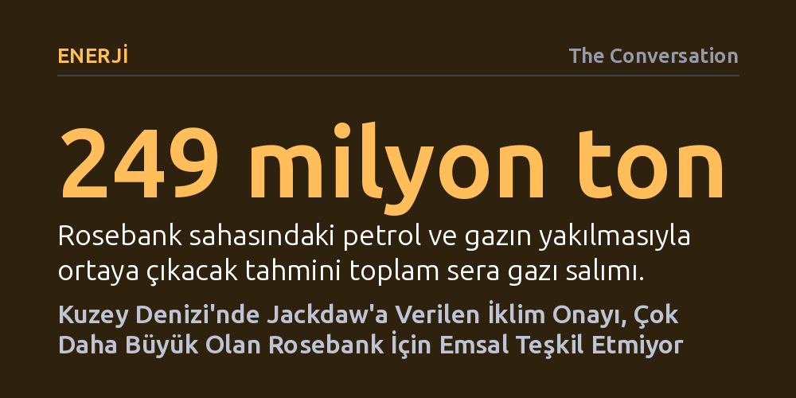

ENERJI · The Conversation · 2026-10-24
İngiltere'de Jackdaw gaz sahasına, yakılan yakıtın emisyonları hesaba katılmasına rağmen enerji güvenliği gerekçesiyle onay verildi. Ancak üretilecek petrolün büyük kısmı ihraç edilecek olan dev Rosebank sahasının aynı hukuki ve iklimsel eşiği aşması çok daha zor.
Mahkemelerin fosil yakıt projelerinde nihai kullanım emisyonlarını zorunlu kılması üretimi tamamen durdurmasa da hükümetleri iklim maliyetleri ile enerji güvenliği arasındaki çelişkiyi kamuoyu önünde açıkça tartmaya mecbur bırakıyor.

İngiltere'de İşçi Partisi hükümeti yeni petrol ve doğal gaz arama ruhsatı vermeme taahhüdüyle iktidara gelmiş olsa da Kuzey Denizi'ndeki Jackdaw sahasından gaz çıkarılmasına onay verdi. İlk bakışta bir geri adım gibi görünen bu tablonun temelinde, deniz yatağında münhasır hak tanıyan arama ruhsatı ile fiili inşaat ve üretime izin veren nihai bakanlık onayı arasındaki kritik ayrım yatıyor. Jackdaw sahası ilk onayını 2022 yılında almıştı; ancak mahkemelerin iklim değerlendirmelerine ilişkin kuralları baştan yazması projeyi yasal olarak savunmasız bıraktı.
Süreci kökten dönüştüren gelişme, Surrey bölgesindeki mütevazı bir petrol kuyusu nedeniyle çevreci aktivist Sarah Finch tarafından açılan dava oldu. İngiltere Yüksek Mahkemesi, Haziran 2024'te aldığı emsal kararla çevresel etki değerlendirmelerinde yalnızca sondaj emisyonlarının değil, çıkarılan petrolün rafine edilip yakılmasıyla oluşan Kapsam 3 emisyonlarının da hesaba katılması gerektiğine hükmetti. Petrol çıkarmanın yegane amacı onu yakmak olduğundan, ortaya çıkan nihai salımlar da projenin doğrudan bir sonucu kabul edildi. Bu karar üzerine İskoçya Yüksek Mahkemesi Ocak 2025'te Jackdaw gaz sahası ile dev Rosebank petrol sahasının mevcut onaylarını hukuka aykırı bularak iptal etti.
Mahkeme iptalinin ardından yayımlanan yeni resmi kılavuz doğrultusunda geliştirici şirket Adura, Jackdaw için baştan hesaplanan yeni veriler sundu. Bu resmi karar belgesi, kuralların pratikte nasıl işlediğini ilk kez ortaya koydu: Sahadan çıkarılacak gaz ve sıvıların kullanım ömrü boyunca toplam 36,6 milyon ton karbondioksit eşdeğeri emisyona yol açacağı, üretim aşamasının ise bu miktarın sadece yaklaşık yüzde 2'sini oluşturduğu hesaplandı. Yani iklim kirliliğinin yüzde 98'i, gazın boru hatlarından geçip nihai kullanıcılar tarafından yakılmasıyla meydana geliyordu.
Enerji Bakanı Miatta Fahnbulleh, bu devasa salımın çevre üzerinde kayda değer olumsuz etkiler doğuracağını kabul etmekle birlikte projeye onay verdi. Yüksek Mahkeme'nin Finch kararı karbon salan her projeyi yasaklamayı değil, karar vericilerin bu iklim maliyetiyle açıkça yüzleşmesini şart koşuyordu. Bakanlık, emisyonların getirdiği yüke orta düzeyde olumsuz ağırlık verirken, ülkenin enerji arz güvenliğine belirgin derecede olumlu ağırlık tanıdı. Gazın büyük kısmının doğrudan İngiltere şebekesine verilecek olması ve ülkenin yasal karbon bütçelerinde tek bir dönemde en fazla yüzde 1,32'lik pay kaplaması, 2050 net sıfır hedefiyle çelişmediği sonucuna varılmasını sağladı.
Jackdaw sahasının hukuki eşiği aşmış olması, bakanlığın her yeni fosil yakıt projesine otomatik olarak onay verebileceği bir emsal yaratmıyor. Shetland Adaları açıklarında yer alan ve İngiltere'nin henüz işletilmemiş en büyük petrol rezervi olan Rosebank sahası çok daha sert bir tabloyla karşı karşıya. İşletmeci Equinor'un kendi değerlendirmesine göre Rosebank'tan çıkarılacak yakıtın yakılması tam 249 milyon ton emisyona yol açacak; bu da Jackdaw'ın toplam salımının neredeyse yedi katına karşılık geliyor.
İki proje arasındaki asıl ayrım ise üretilen kaynağın nereye gideceğinde düğümleniyor. Jackdaw'dan çıkan gaz doğrudan İngiltere'nin iç tüketimine akıp enerji güvenliğini desteklerken, Rosebank'ın çıkaracağı ham petrolün büyük bölümü uluslararası piyasalara satılacak. İngiltere'de sadece dört rafinerinin kalmış olması nedeniyle petrolün Avrupa'da işlenmesi öngörülüyor. Küresel piyasalarda satılacak ve dünya genelindeki toplam emisyonları artıracak bir petrol sahasını ulusal karbon bütçeleri ve iç enerji güvenliği kılıfıyla savunmak, bakanlık açısından ikna edilmesi çok daha güç bir hukuki zemin oluşturuyor.
Kararın ardından çevre örgütleri sert tepki gösterirken Greenpeace, bu onayın fosil yakıt lobilerinin enerji politikası üzerindeki gücünü gösterdiğini savundu. Karara karşı İskoçya Yüksek Mahkemesi nezdinde üç ay içinde yeni bir yargısal denetim davası açılması bekleniyor. Ancak yargısal denetim mekanizması kararın yerindeliğini veya doğruluğunu değil; bakanın yasayı yanlış yorumlayıp yorumlamadığını ya da temel bir unsuru göz ardı edip etmediğini denetliyor. Dolayısıyla itirazcıların bakanın yasal yetki sınırını aştığını kanıtlaması gerekiyor.
Özetle İngiliz mahkemeleri Kuzey Denizi'ndeki vanaları kapatmış değil; fakat bakanları verdikleri her onayın iklim faturasını kamuoyu önünde şeffafça açıklamaya zorunlu kıldı. Jackdaw iç pazar gazı argümanıyla bu filtreyi geçmiş olsa da Rosebank projesi, petrolün ihraç edildiği bir senaryoda bu hukuki mantığın geçerliliğini koruyup koruyamayacağını belirleyen asıl dönüm noktası olacak.